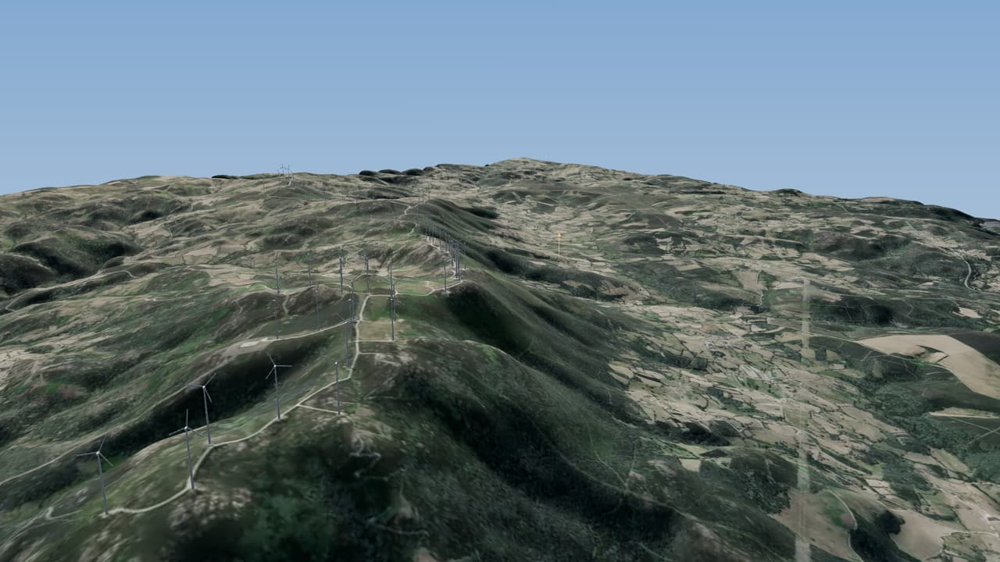
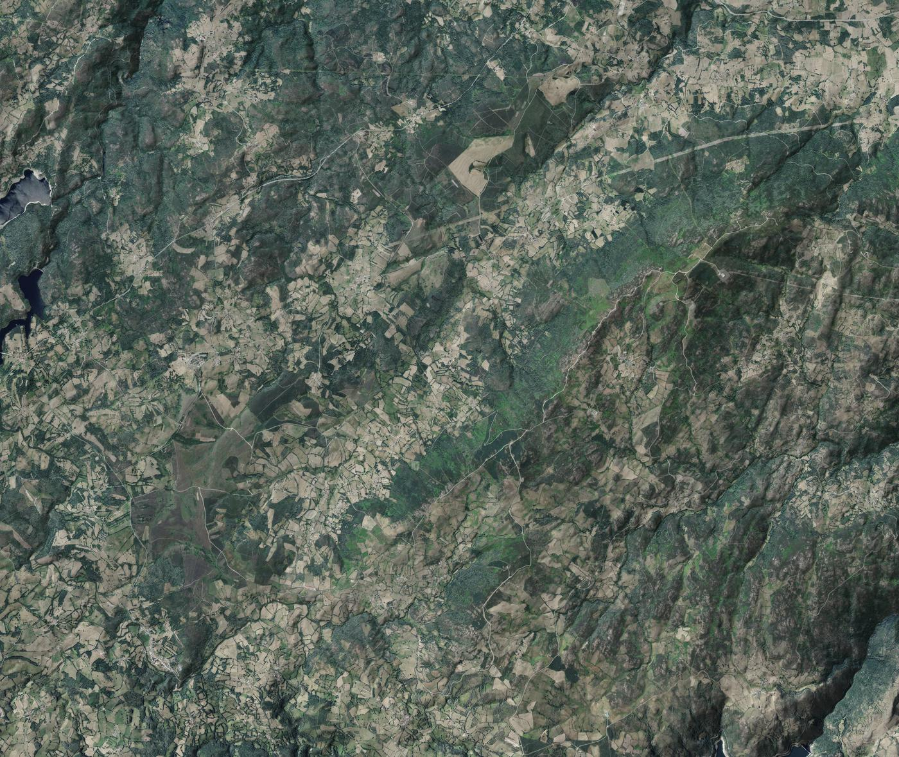

Texto corto del banco: un caserío de piedra entre prados, muros y castaños, a los pies de la Serra do Burgo.
42,312° N · 7,450° O · 917 m
Secciones de la web entre la portada y el claro.
Trece por once kilómetros de relieve real.

Cargando el relieve…
Relieve MDT05 y ortofoto PNOA © IGN (CC BY 4.0). Aerogeneradores: © OpenStreetMap. Altura del relieve ×1,8